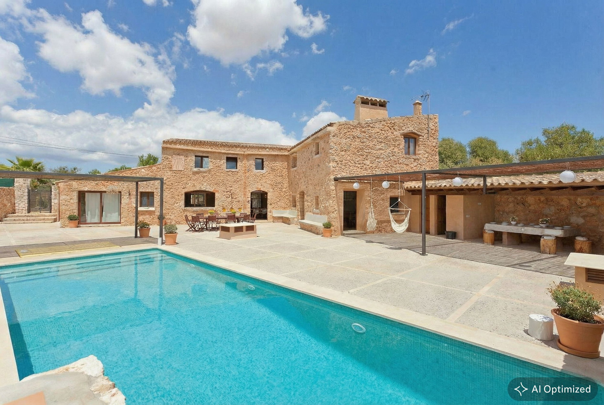
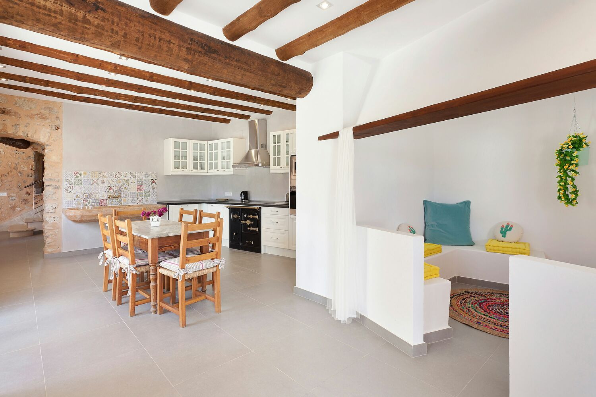
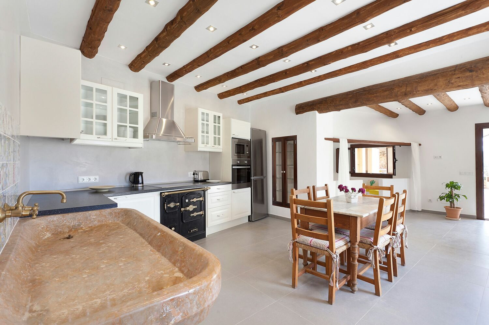
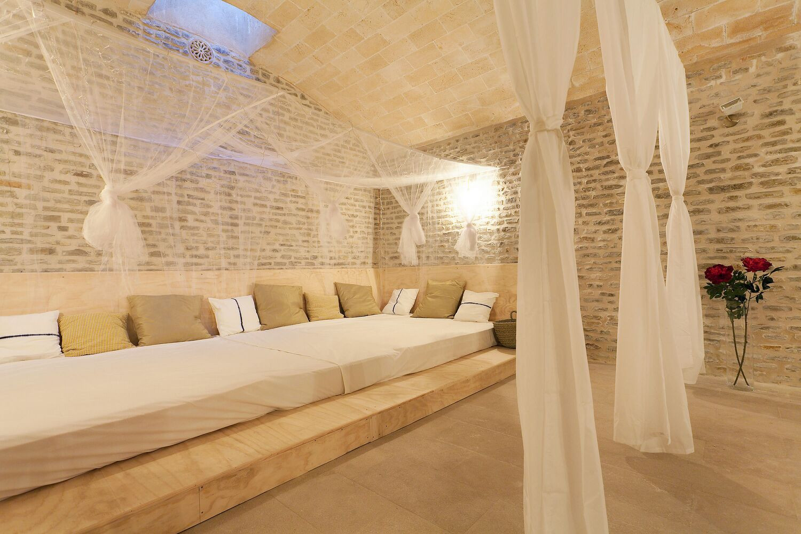
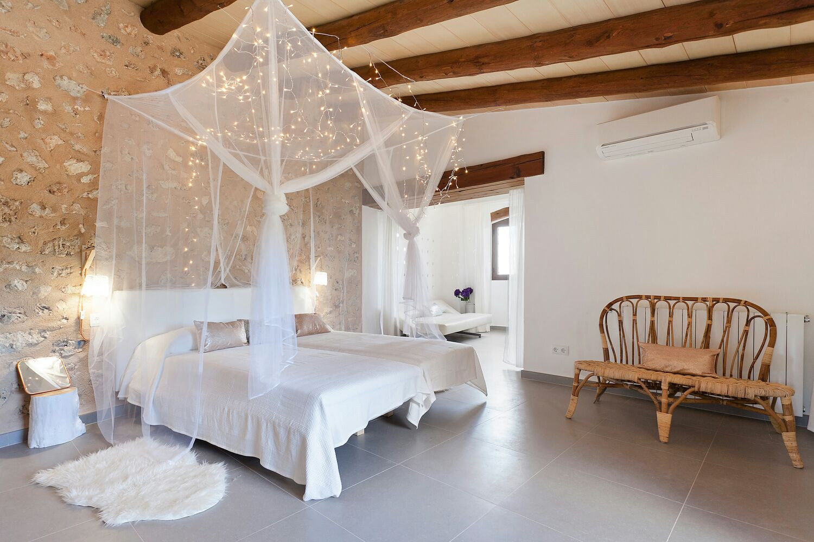
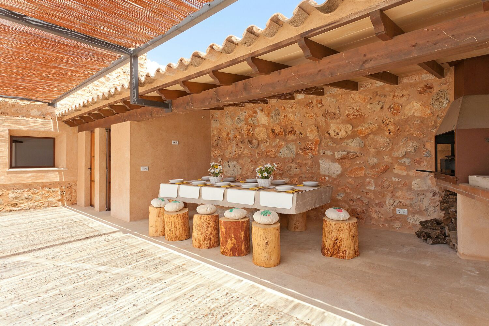

€990.000
Biniali, Sencelles, Mallorca
Open the listingDesign-forward character: open stone walls, exposed beams, high ceilings, Mallorcan kitchen into living, saltwater pool in olive patio, impressive bodega. Easy-maintenance finca scale (1,252 m²) minutes from Biniali — old mixed with new.
Opened 30 Aug 2026. Offer 990000 EUR; page InStock. 4 bed / 3 bath / 194 m²; last restoration 2015; oil heating + A/C + private well. NOT the board's biniali W-02SC8C (€1.195M ready townhouse).




